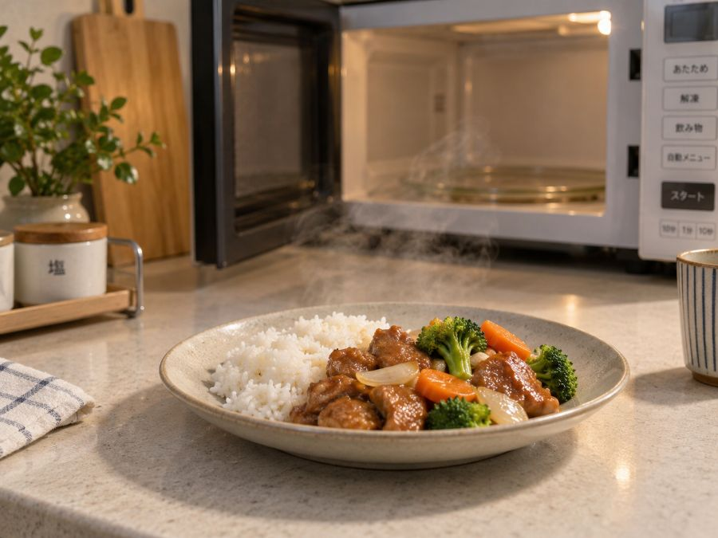

宅配食の温め方
まずいのではなく、
温めすぎている。冷凍宅配弁当の温め方とワット数の換算
冷凍の宅配食が硬い、水分が抜けている。この原因の大半は加熱時間です。指定より長く温めると、食感は確実に落ちます。

宅配食の温め方｜結論だけ知りたい方へ
最初の1食は指定時間どおりに温めて、足りなければ10秒ずつ足すのが確実です。一度長く温めたものは戻りません。
ワット数の換算表
| 表示 | 500W | 600W | 700W |
|---|---|---|---|
| 500Wで5分 | 5分00秒 | 4分10秒 | 3分35秒 |
| 600Wで4分 | 4分50秒 | 4分00秒 | 3分25秒 |
| 600Wで5分 | 6分00秒 | 5分00秒 | 4分20秒 |
パッケージの表示と自宅のワット数が違う場合は換算が必要です。ワット数が高いほど時間は短くなります。
失敗しない手順
1
フィルムの指示を確認する「フィルムをはがす」「少し開ける」で結果が変わります
2
指定時間で一度止める長く温めると水分が抜けて硬くなります
3
中心を確認する冷たい部分があれば10秒ずつ追加
4
少し置く取り出してから30秒ほどで全体の温度が均一になります
部分的に冷たいとき
レンジの加熱は均一ではありません。中心が冷たく、端が熱いという状態が起きます。
- ターンテーブルの場合は中央を外して置く。端のほうが温まります
- 一度取り出して混ぜる。混ぜられる惣菜なら、これが最も早い
- 10秒ずつ追加する。1分足すと確実に温めすぎます
親に送る場合
温め方を紙に書いて同封してください。口頭で伝えても忘れられます。自宅のレンジのワット数で換算した時間を書いておくと確実です。
伝え方の工夫は高齢の親に送るページに。
容器のタイプ別の注意
| タイプ | 扱い方 |
|---|---|
| フィルムで密封 | 指示どおりに。はがすか、少し開けるかで結果が変わります |
| トレーに仕切りあり | 中央より端のほうが温まります。位置をずらして |
| 汁気のあるおかず | 吹きこぼれます。皿を下に敷いてください |
| ご飯が一緒 | ご飯とおかずで適温が違います。時間は長いほうに合わせる |
| 袋ごと温める | 袋に穴を開けるか、口を開けてから |
失敗したときの立て直し
温めすぎて硬くなった場合、水分を少し足して再加熱すると戻ることがあります。小さじ1の水をかけて30秒。ただし完全には戻りません。
逆に冷たい部分が残った場合は、10秒ずつ足してください。1分足すと確実に温めすぎます。